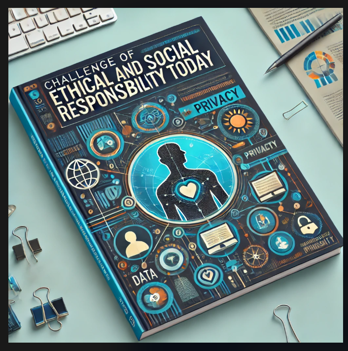

Introdução
Vivemos em uma sociedade profundamente impactada pela tecnologia e pela Inteligência Artificial (IA). Empresas, bancos e governos estão cada vez mais dependentes da coleta e análise de dados para tomar decisões, melhorar serviços e aumentar a eficiência. No entanto, essas inovações também trazem desafios éticos e sociais significativos, principalmente relacionados ao uso justo e seguro das tecnologias. Este e-book aborda como esses desafios afetam diferentes setores e propõe soluções que possam beneficiar tanto iniciantes quanto experientes nos campos empresarial, bancário e de cibersegurança.
Capa
Princípios da Inteligência Artificial
A inclusão social é um pilar fundamental para garantir que todos independentemente de condições econômicas, sociais ou físicas, tenham acesso aos benefícios da tecnologia. Programas de IA podem, por exemplo, ajudar pessoas com deficiência, melhorar a educação em regiões remotas e aumentar a eficiência dos serviços de saúde. No entanto, a inclusão só é possível com legislações como a Lei Geral de Proteção de Dados Pessoais (LGPD), que protege a privacidade e os direitos dos cidadãos. Exemplo prático: Uma empresa bancária que utiliza IA para oferecer créditos personalizados deve garantir que os dados sensíveis dos clientes sejam tratados de maneira ética e segura, evitando discriminações ou prejuízos financeiros.
Confiabilidade, Privacidade e Segurança
Confiabilidade na IA depende de sua capacidade de operar sem vieses, com precisão e transparência. Para os setores bancário e empresarial, isso significa que algoritmos devem ser auditáveis, e os dados devem ser protegidos contra acessos não autorizados. Privacidade e segurança são preocupantes não apenas para indivíduos, mas também para organizações que precisam proteger suas bases de dados contra ataques cibernéticos. Dicas para boas práticas:

- Implementar autenticação multifator
- Utilizar criptografia de dados
- Treinar funcionários contra ameaças cibernéticas
Transparência e Responsabilidade das Organizações Públicas
Organizações públicas têm o dever de informar claramente como utilizam os dados dos cidadãos e de garantir que essas informações sejam protegidas. No entanto, a falta de recursos e a complexidade da legislação podem dificultar a conformidade com as leis como a LGPD. Exemplo: Um governo municipal que utiliza um sistema de IA para distribuir auxílios sociais deve ser transparente sobre os critérios utilizados para garantir que os benefícios sejam distribuídos de forma justa. Soluções: • Publicação de relatórios regulares sobre o uso de dados. • Criação de canais de comunicação para esclarecer dúvidas da população.
Conclusão e Perspectivas Futuras
A responsabilidade ética e social na era da IA exige um compromisso coletivo. Empresários, especialistas em cibersegurança e governantes precisam colaborar para criar um ambiente onde a tecnologia sirva ao bem comum, respeitando direitos fundamentais e promovendo inclusão. Para avançar, é essencial investir em educação, desenvolver legislações mais robustas e incentivar a transparência nas organizações. Com esses passos, é possível construir um futuro mais justo e seguro para todos.